CRTE - Certified Red Team Expert
Enumeration
The enumeration phase in a Red Team engagement is where we gather as much information as possible about the target Active Directory (AD) environment. This phase is foundational because it helps us map out the domain structure, identify potential attack paths, and uncover high-value targets like privileged accounts or misconfigurations. Enumeration is a silent reconnaissance step that, when done effectively, can lead to a smoother and more efficient execution of later attack phases.
Why is Enumeration Key in a Red Team Engagement?
- Mapping the Environment:
- Identifying Weak Points:
- Minimizing Noise:
- Building Attack Paths:
Key Goals of Enumeration
- Discovering Domain Structure: Learn about domain controllers, organizational units, and group policies.
- Finding Users and Groups: Identify regular and privileged user accounts, along with group memberships and their implications.
- Understanding Trust Relationships: Enumerate domain trusts (e.g., parent-child or forest trusts) to identify paths that might lead to other domains.
- Locating Sensitive Resources: Uncover shares, service accounts, and objects with weak permissions.
Stealth in Enumeration
Stealth is crucial during enumeration because the goal is to gather information without triggering alerts from tools like Microsoft Defender for Endpoint (MDE) or Microsoft Defender for Identity (MDI). These tools are designed to detect abnormal behavior, especially during actions like AD enumeration. Here’s why careful planning is essential:- Behavioral Analysis: MDE and MDI look for patterns of suspicious activity, such as querying AD for large amounts of data or using known enumeration scripts like PowerView.
- Noise Reduction: Native tools and commands are less likely to trigger alerts because they align with regular administrative activity.
- Blending In: Using tools and methods that mimic legitimate administrative behavior makes it harder for defenders to distinguish between a legitimate user and an attacker.
Why Use PowerShell for Enumeration?
PowerShell is a natural choice for AD enumeration because it’s deeply integrated into Windows and widely used by administrators for legitimate tasks. This integration allows attackers to leverage PowerShell commands to gather information while blending in with regular activity.Choosing the Right Tool
- Active Directory PowerShell Module:
- PowerView:
- BloodHound:
- SharpView:
Avoiding Detection During Enumeration
- Use Native Tools First: Start with the Active Directory PowerShell Module to collect most of the information you need. Since these actions mimic legitimate administrator behavior, they are less likely to trigger alerts.
- Minimize Data Volume: Avoid querying large amounts of data in a single operation. Instead, break your queries into smaller, less conspicuous tasks.
- Obfuscate Where Necessary: If you must use custom scripts like PowerView, ensure they are obfuscated to reduce the likelihood of detection by MDE or MDI.
- Avoid Known Tools Initially: Tools like BloodHound and PowerView are well-known to defenders and can be easily flagged. Reserve these tools for advanced analysis or tasks that native tools cannot perform.
Why Enumeration is a Silent Weapon
Enumeration is often the most overlooked yet most critical phase in a Red Team engagement. Proper enumeration:
- Provides a clear understanding of the environment.
- Reduces the risk of failed attacks due to lack of knowledge.
- Helps you craft precise, low-noise attacks that are harder to detect.
Four Methods for AD Enumeration
Here are the main tools used for domain enumeration in AD, their characteristics, and when to use them.1. Active Directory PowerShell Module
- What is it?
- Advantages:
- Why Use It?
2. BloodHound
- What is it?
- Advantages:
- Limitations:
- When to Use It?
3. PowerView
- What is it?
- Advantages:
- Limitations:
- Why Use It Sparingly?
4. SharpView
- What is it?
- Advantages:
- Limitations:
- When to Use It?
Best Choice to Avoid MDE/MDI Detection
For stealthy enumeration, Active Directory PowerShell Module is the best choice because:- It blends with normal administrative activity, reducing the risk of detection.
- Its commands are natively supported by Microsoft, making them less likely to trigger alerts.
- When used in moderation, it avoids raising red flags in logs or telemetry.
Why Use ADModule for Enumeration?
- Native and Trustworthy: It’s a built-in tool that defenders expect administrators to use, making its activity less suspicious.
- Comprehensive Coverage: Provides most of the functionality needed for enumeration, like retrieving users, groups, and computers.
- Log Friendly: Creates less alarming logs compared to custom tools.
Why Use PowerView Only in Special Cases?
- Detectability: PowerView is known to defenders and flagged by MDE/MDI due to its aggressive enumeration behavior and script signatures.
- Specific Tasks: It’s ideal for tasks like ACL enumeration or privilege audits, which are not easily accomplished with native tools.
- Fallback Tool: Use it only when ADModule lacks the capability for specific enumeration tasks.
Conclusion
- Enumeration is critical in understanding the AD environment and building effective attack paths.
- To maintain stealth, Active Directory PowerShell Module is the primary tool, as it blends with legitimate activity and avoids detection.
- PowerView and SharpView are fallback tools for advanced tasks but should be used sparingly to avoid detection.
- BloodHound is a powerful analysis tool but not suitable for initial enumeration due to its noisiness.
Note: BloodHound won’t be demonstrated in this guide.Througout the Labs I’ll be using ADModule and Powerview for enumeration, ADModule will always be our first option and Powerview will be used in some specific cases.
PowerShell Security Control Bypass
Previously we discussed a little bit about 4 PowerShell Detection mechanisms, now we will discuss few ways to bypass these mechanisms and try to be stealthy while doing our domain enumeration phase.
Invisi-Shell
InvisiShell is a tool designed to bypass security controls in PowerShell, allowing for the stealthy execution of scripts by circumventing enhanced logging mechanisms and detection by security software. Here’s a detailed explanation of how InvisiShell works:
- Bypassing PowerShell Security Measures: InvisiShell is specifically created to bypass system-wide transcription, script block logging, and the Anti-Malware Scan Interface (AMSI).
- Hooking .NET Assemblies: InvisiShell achieves its bypass by hooking into the .NET assemblies System.Management.Automation.dll and System.Core.dll.
- Methods of Use: InvisiShell can be launched in two ways, depending on the user's privileges:
- Incapacitating Security Features: By hooking into these .NET assemblies, InvisiShell disables system-wide transcription, AMSI, and script block logging for the current PowerShell session.
- Avoiding Detection: When using InvisiShell, the tool hooks to System.Management.Automation.dll and System.Core.dll, which allows it to avoid system-wide transcription, script block logging, and AMSI.
- Integration with Other Tools: The sources show that InvisiShell can be used in conjunction with other tools, such as PowerUp, PowerView, the AD module, and other PowerShell scripts.
- Clean-up Process: To complete the clean-up, users must type exit in the new PowerShell session created by InvisiShell.
- Modified Version: The class uses a slightly modified version of InvisiShell.
- Location of Tools: All the tools, including InvisiShell, used in the lab environment are located in the C:\AD directory on the student VM. The lab manual also notes that this directory is exempted from Windows Defender, but AMSI may still detect some tools when loaded.
- InvisiShell and Binaries: It is noted that binaries like Rubeus.exe may be inconsistent when used from within an InvisiShell session and should be run from a normal command prompt.
- Example Usage: The lab manual provides examples of using InvisiShell to launch a PowerShell session, import modules, and run commands to exploit a service, bypass AMSI, and extract credentials from a remote machine.
It’s always good that we do run Invisi-Shell via cmd before we start doing our enumeration and right after script execution, Powershell will be executed. This script should be executed depending on the type of privilege we do have on the machine. If we are just a simple low level privileged user, then we should run RunWithRegistetyNonAdmin.bat. If we are a high level privileged user like Administrator for example, then we should run RunWithPathAsAdmin.bat.
RunWithRegistryNonAdmin.bat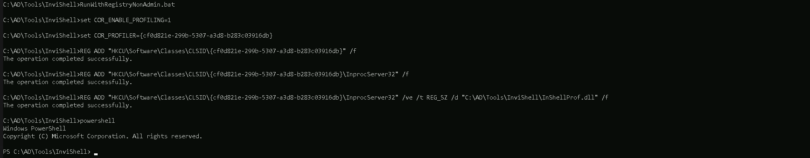
To verify whether InvisiShell has successfully bypassed the intended PowerShell defenses (e.g., logging mechanisms, AMSI, or other detection features), you can perform targeted tests to validate its effectiveness. Here's a step-by-step guide to check what defenses you were able to bypass and confirm whether InvisiShell is working properly:1. Validate PowerShell Logging (Script Block Logging & Transcription)
You can verify if Script Block Logging and System-wide Transcription are disabled or bypassed.Steps:
- Script Block Logging Test:
- Transcription Test:
2. Validate AMSI Bypass
AMSI scans the script content in memory before execution. You can confirm whether AMSI is disabled or bypassed.Steps:
- Run a script known to trigger AMSI, such as one containing flagged keywords:
- Without InvisiShell, this should trigger an AMSI detection and display a warning like:
- If InvisiShell is active and bypassing AMSI, the script should execute without any warning or blocking.
3. Validate Constrained Language Mode (CLM)
If CLM is enforced, it restricts advanced features like custom .NET assemblies and cmdlets.Steps:
- Check if CLM is enforced by running:
- Try to execute a command that requires full language mode, such as:
4. Check Registry and Configurations
InvisiShell relies on registry modifications and hooking into PowerShell processes.Steps:
- Verify Registry Modifications:
- Validate DLL Injection:
5. Test Logging with a Known Detection Tool
To ensure that logging mechanisms (e.g., Script Block Logging or transcription) are bypassed:- Use a test tool like Sysmon or a logging-enabled SIEM/EDR platform.
- Execute PowerShell commands or scripts, then verify if any telemetry is captured in these tools. If InvisiShell is working, logs related to the executed script should not appear.
6. Validate MDE/EDR Detection
To check if InvisiShell bypasses Microsoft Defender for Endpoint (MDE) or another EDR:- Trigger a Common Red Team Command:
- Analyze Process Activity:
7. Validate Against Custom Logging Solutions
Many organizations have custom logging mechanisms that extend beyond native PowerShell features. To confirm if these are bypassed:- Simulate Detection Scenarios:
Conclusion: How to Know If InvisiShell Is Effective
- If Script Block Logging and Transcription logs are empty after executing PowerShell commands, InvisiShell successfully bypassed PowerShell logging mechanisms.
- If AMSI does not block a script flagged as malicious, InvisiShell bypassed AMSI.
- If advanced commands execute despite CLM enforcement, InvisiShell successfully bypassed CLM.
- If your actions avoid detection by MDE or SIEM tools, InvisiShell contributed to enhanced stealth, but keep in mind:
Now that we were able to execute our InvisiShell, let’s import ADModule for our enumeration.
Importing Modules to Powershell.
For this module importing mechanism we do have 2 ways: Pay attention that dot sourcing with only work with extentions like .ps1, .psd1 and the Import-Module with work with all the extentions like, .ps1, .psd1, .dll, and so on. 1 - First option is using a dot sourcing mechanism. . .\PowerView.ps1 . .\ActiveDirectory.psd1
2 - Second option is using Import-Module. Import ADModule in the following sequence .dll then .psd1. Import-Module C:\AD\Tools\ADModule-master\Microsoft.ActiveDirectory.Management.dll Import-Module C:\AD\Tools\ADModule-master\ActiveDirectory\ActiveDirectory.psd1
Import-Module .\PowerView.ps1
On the screenshot above, it is possible to see that we used the 2 ways to import ADModule and PowerView as well.
Enumerating Users, Computers and groups
User Enumeration
It is always import as an internal attacker that we start our enumeration by requesting a list of all the users within the company, this way we can have a better view of all the valid User Account in our domain. This list of users will really be important for us later on. Get-ADUser -Filter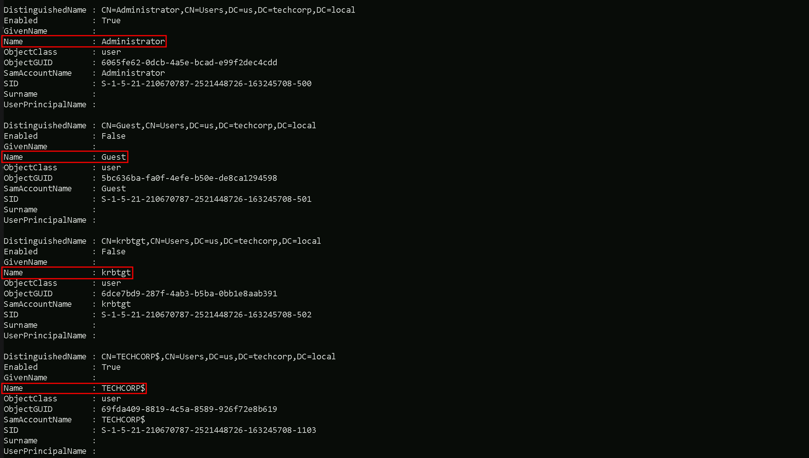
As it’s possible to see, above we were able to grab the list of users, we have only 4 because the output is snip. Let’s say we want to have a full list of users only on the output and avoid any other property, is is possible by simply filtering for propertly SamAccountName for example, by piping the output and requesting only that specific property. Get-ADUser -Filter | Select -ExpandProperty samaccountname
As we can see, filtering by one specific property, gave us the possibility to bring only the full list of usernames. Other properties can be utilized the same when its needed.
Computer Enumeration
Our next step is to enumerate the computers in the domain and to achieve this command we can do the following as we did from our users enumeration. This request will help us to understand what type of computer we do have on the our targeted domain. We can simply request a full list of domain computers with all its properly: Get-ADComputer -Fiter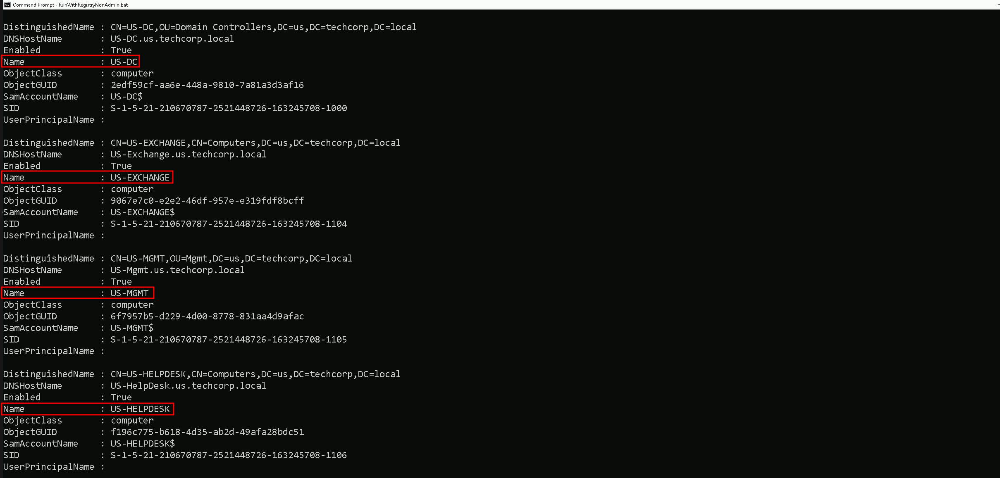
Above on the screenshot we do have the list of computers and it’s property in the domain. The list is SNIP since it brought with all the properties. We can also filter is and get just the full list of computer accounts on the output and save it as a list of computer for future used
Get-ADComputer -Fiter | Select -expand name
We can see above that we were able to requets the full list of computers within the domain we are right now, in this case these are all the computer we have registered insde us.techcorp.local , which is a child domain of techcorp.local. We will discuss about Parent/Child Relationship later on.
Groups Enumeration
We can enumerate as well all the groups we have inside our target domain (eu.techcorp.local) by using the command Get-ADGroup. Get-ADGroup -Filter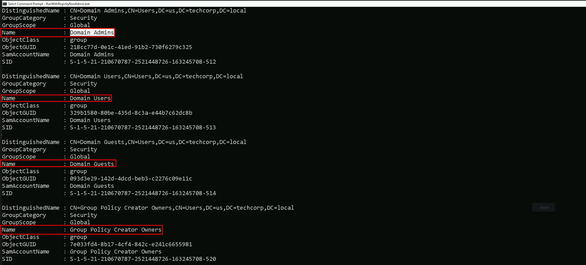
As we did previously while enumerating Users and Computers, we can also filter to simply get a full list of all the users by filtering by the property name. Get-ADGroup -Filter | Select -Expand name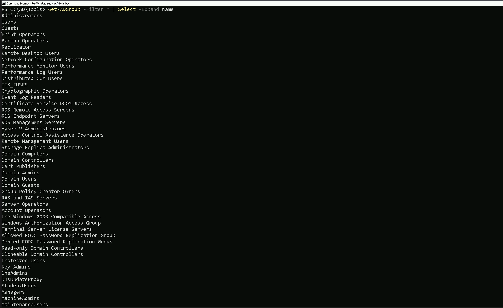
Now we do have a full list of all the groups inside us.techcorp.local. Now let’s move a bit further on this enumeration… Let’s imagine that we want to go over one of the groups we just found inside the target domain and check the attributes of one specific group of our interest. For example, we can enumerate Domain Admins Group by simply checking the group itself then we check its properties. Get-ADGroup -Identity 'Domain Admins' Get-ADGroup -Identity 'Domain Admins' -Properties
Get-ADGroup -Identity 'Domain Admins' -Properties
 It is possible to see above that by checking the ‘Domain Admins’ group properties, it reveals lots of information, including also who is member of the ‘Domain Admins’ group.
Let’s say now, we would like to know who are the member of a specific group, for example ‘Domain Admins’.
We can use the command Get-ADGroupMember to achieve this task.
Get-ADGroupMember -Identity 'Domain Admins'
It is possible to see above that by checking the ‘Domain Admins’ group properties, it reveals lots of information, including also who is member of the ‘Domain Admins’ group.
Let’s say now, we would like to know who are the member of a specific group, for example ‘Domain Admins’.
We can use the command Get-ADGroupMember to achieve this task.
Get-ADGroupMember -Identity 'Domain Admins'

The output from our previous enumeration, confirms what we saw when we used the Get-ADGroup command to enumerate the ‘Domain Admins’ properties. Inside Domain Admins group we do have 2 users which are Administrator and decda.
Special Group
There is a special case here for a special group. If you remember from our Groups enumeration, there is a Group named ‘Enterprise Admins'
The Enterprise Admins group is a highly privileged security group in a Microsoft Active Directory (AD) forest. It exists only in the root domain of the AD forest and grants its members administrative privileges across the entire forest, including all child domains. Members of this group have the ability to manage any domain, Domain Controllers (DCs), and critical AD components across the forest. From an offensive security perspective, enumerating the Enterprise Admins group is crucial because it provides insight into who holds the keys to the forest, opening pathways to achieve forest dominance.
Offensive Use Case Example
- You compromise a low-privileged account in a child domain.
- Enumerate Enterprise Admins to identify privileged accounts.
- Use pass-the-hash, Kerberoasting, or other techniques to compromise an Enterprise Admin account.
- With the Enterprise Admin account:
Takeaways
For a Red Teamer or Pentester:- The Enterprise Admins group is the ultimate prize when targeting AD environments because of its forest-wide privileges.
- Enumerating this group provides a roadmap to identifying the most critical accounts in the environment.
- Once an Enterprise Admin is compromised, you essentially own the entire AD forest, enabling lateral movement, persistence, and complete control over the target network.

The initial query failed because the Enterprise Admins group does not exist in the child domain (us.techcorp.local) being queried.
By specifying the -Server parameter and pointing it to the root domain (techcorp.local), the command will direct the query to the correct location where the Enterprise Admins group resides, allowing the enumeration to succeed. Get-ADGroupMember -Identity 'Enterprise Admins' -Server 'techcorp.local'
Why Did the Query Work with Server and the Root Domain?
- Specifying the Root Domain:
- Active Directory Hierarchy:
Enumerating GPOs and OUs
What Are GPOs (Group Policy Objects)? Group Policy Objects (GPOs) are a key feature in Microsoft Active Directory (AD) environments, used to define and enforce settings across computers and users in a domain. These settings are centrally managed by domain administrators and can apply configurations for security, software installation, scripts, and other administrative tasks. Enumerating Group Policy Objects (GPOs) with PowerView is often preferred over the Active Directory PowerShell Module (ADModule) during Red Team engagements because PowerView is designed with offensive security in mind, offering greater flexibility and specific enumeration features. Here's a detailed comparison to explain why PowerView is better suited for enumerating GPOs in such scenarios Since ADModule Lacks specialized commands for offensive enumeration, such as inspecting GPO permissions or extracting Restricted Groups directly, PowerView is better. Get-DomainGPO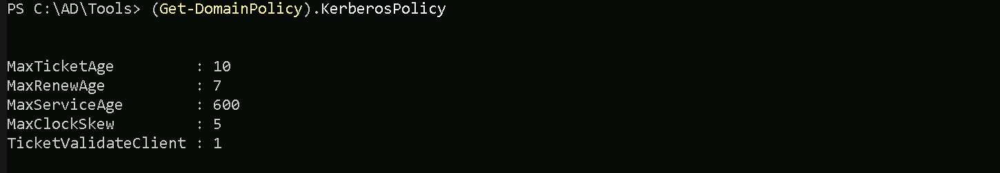
The Command Get-DomainGPO issued above, retrieves all Group Policy Objects (GPOs) in the domain and provide the following information:
- GPO Display Name.
- GUID (unique identifier).
- SYSVOL path for each GPO.
- Ownership and permissions for each GPO.
What Are Restricted Groups?
Restricted Groups are a specific setting within GPOs that control the membership of groups on domain-joined machines. Administrators use Restricted Groups to ensure that specific users or groups are added to (or removed from) local groups like Administrators, Remote Desktop Users, or any custom groups on all domain-joined systems.
Example:
If a GPO with a Restricted Group policy is configured to:
- Group Name: Local Administrators.
- Members: Domain Admins, ITSupport.

It is possible to see that we do have one Restricted Group in the domain, named machineadmins. Now that we already know that we do have at least one Restricted Group. Let’s see if we can find out the members of this Restricted Group. Get-DomainGroupMember -Identity 'machineadmins'
We can also try to check the Members of this Restricted Group with ADModule. But it seems like we have no members at all in this Restricted Group. Get-ADGroupMember -Identity 'machineadmins'
Organization Units Enumeration
In an Active Directory (AD) environment, Organizational Units (OUs) are containers used to logically organize and manage objects within a domain. These objects can include:
- Users
- Groups
- Computers
- Other OUs (nested OUs)
OU Enumeration with ADModule
Let’s start this enumeration using ADModule. Get-ADOrganizationalUnit
Using the ADModule above, we were able to retrieve the OUs we do have configured on us.techcorp.local domain(the domain we are right now). Now that we were able to find all the OU inside our domain, we can see or list all the computers that belong to any specific student of our choice.
Let’s use Students OU and list all the computers inside this OU. Get-ADOrganizationalUnit -Identity 'OU=Students,DC=us,DC=techcorp,DC=local' | %{Get-ADComputer -SearchBase $_ -Filter } | Select name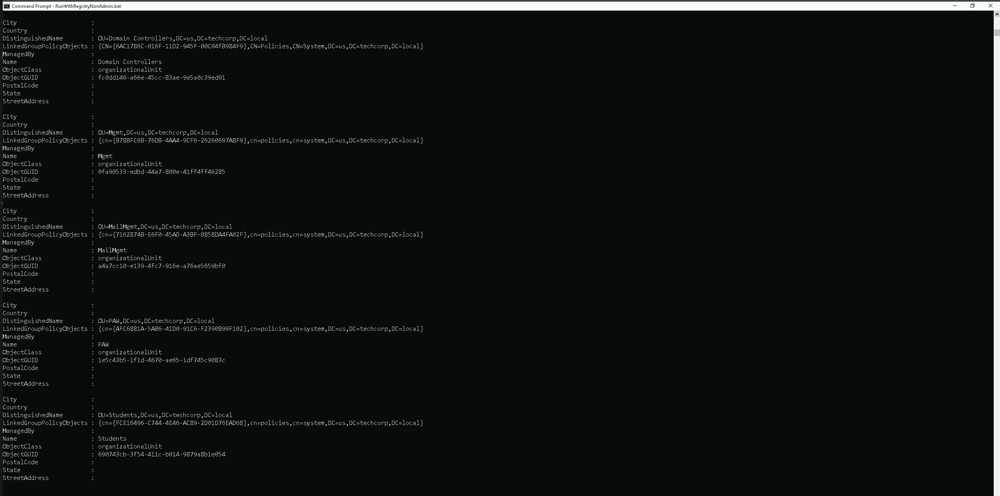
Amazing, inside the Students OU we do have all the students machines.
OU Enumeration with PowerView
To enumerate OU inside the domain we can use the Get-DomainOU command. Get-DomainOU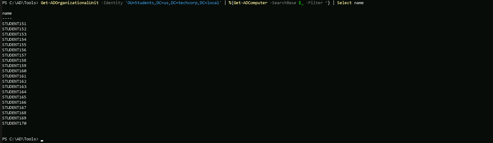
Using PowerView module we were able to retrieve all the OUs configured in this Domain.
Now let’s enumerate all the computers that belong to Students OU. (Get-DomainOU -Identity 'Students').distinguishedname | %{Get-DomainComputer -SearchBase $_} | Select name
Now we do have the full list of computers inside Students OU. We can see that all the students computers belong to this student OU.
Let’s say we want to enumerate the GPO applied to Students OU. To achieve this task, all we need to do is to use Get-DomainGPO and filter by the unique identifier (GUID) of the GPO we are querying. Since we made a request of all OU previously with command Get-DomainOU, we can find the unique identifier (GUID) under the glink property ([LDAP://cn={FCE16496-C744-4E46-AC89-2D01D76EAD68},cn=policies,cn=system,DC=us,DC=techcorp,DC=local;0])
Get-DomainGPO -Identity '{FCE16496-C744-4E46-AC89-2D01D76EAD68}'
We can see, we are able to find what GPO is being applied to Students OU with a single command. Remember that this can be done with anyone OU based on OU’s unique identifier (GUID).
Enumerating ACL (Access Control List)
Access Control Lists (ACLs) in Active Directory (AD) are critical components that govern permissions and access rights within an AD environment. ACLs determine who can access what and what actions they can perform on objects like users, groups, computers, organizational units (OUs), and domain objects. ACLs are the backbone of access control in an Active Directory environment. Misconfigurations in ACLs are often exploited by attackers to escalate privileges or move laterally. By enumerating ACLs during a Red Team engagement, attackers can uncover these misconfigurations and abuse them to achieve their objectives. For pentesters, this process is essential for demonstrating the risks posed by overly permissive or misconfigured permissions. Proper enumeration and exploitation of ACLs highlight critical security gaps, allowing organizations to strengthen their defenses.
An ACL is a list of permissions attached to an object. It defines what actions a security principal (user, group, or computer) can perform on that object.- Discretionary Access Control List (DACL): Defines which users or groups have specific permissions.
- System Access Control List (SACL): Defines auditing rules, specifying which actions are logged for certain users or groups.
- Permissions:
Importance of ACLs in Active Directory
- Securing Resources:
- Delegating Administrative Tasks:
- Preventing Lateral Movement:
- Enforcing Compliance:
Why Enumerating ACLs Is Important in a Red Team Engagement
During a Red Team engagement, enumerating ACLs is a critical step because misconfigured or overly permissive ACLs often provide a pathway to privilege escalation or lateral movement. Here's why:- Identifying Weak Permissions:
- Discovering Privilege Escalation Paths:
- Abusing Delegated Access:
- Planning Stealthy Attacks:
Use Case: Enumerating ACLs During a Pentesting Engagement
Scenario: Privilege Escalation via Misconfigured ACLs
- Initial Access:
- Enumeration of ACLs:
- Exploitation:
- Privilege Escalation:
- Post-Exploitation:
Lessons Learned:
- Misconfigured ACLs directly led to privilege escalation.
- Lack of proper auditing (SACLs) may have allowed the attack to go unnoticed during execution.
We have 2 options to enumerate ACL inside the us.techcorp.local domain. Let’s achieve this goal using ADModule and also PowerView.
Enumerating ACL with ADModule
Let’s say we want to enumerate the ACLs on the Domain Admins group object itself, showing who has permissions to manage or interact with that group. Get-ACL 'AD:\CN=Domain Admins,CN=Users,DC=us,DC=techcorp,DC=local' | select -ExpandProperty Access
Above we do have several ACLs but I just showed 4 of the several ACL,. We are inspecting the Access Control List (ACL) of the Domain Admins group, specifically focusing on its Access Control Entries (ACEs). This provides details about who has permissions on the object and what actions they are allowed to perform. Our current command is enumerating the ACLs on the Domain Admins group object itself, showing who has permissions to manage or interact with that group.
Enumerating ACLs with PowerView
To enumerate ACLs using PowerView, we can user the Get-DomainObjectACL command. Get-DomainObjectACL The Command Above will list all the ACLs we do have configure on the domain.
Let’s say that we do want to see what ACLs are Applied to Domain Admins Group as we did previously with ADModule. To achive this task we can simply filter by the Group name.
Get-DomainObjectACL -Identity 'Domain Admins' -ResolveGUIDs -Verbose
The Command Above will list all the ACLs we do have configure on the domain.
Let’s say that we do want to see what ACLs are Applied to Domain Admins Group as we did previously with ADModule. To achive this task we can simply filter by the Group name.
Get-DomainObjectACL -Identity 'Domain Admins' -ResolveGUIDs -Verbose
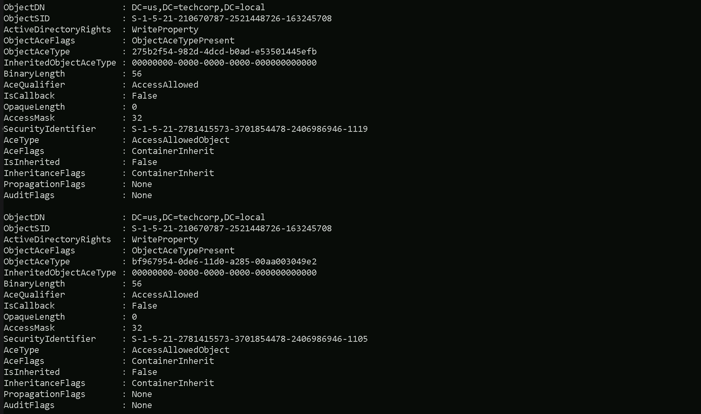
We were able to get a list of all ACLs in domain us.techcorp.local
Now let’s do something interesting here. Since we are a valid domain user, let’s see if we do have any valid or modified RIGHTS/PERMISSIONS on object inside the domain. We are studentuser163, so in this case we will be checking, what permissions our user has in this domain. All we need to do is to filter based on our username.Note: Please pay attention that, this type of query may take some time to finish.Find-InterestingDomainACL -ResolveGUIDs | ?{$_.IdentityReferenceName -Match 'studentuser163'}

Above we can see that we have not received any output, it means that our current user studentuser163 does not contain any RIGHT or PERMISSION on any object inside us.techcorp.local domain.
Let’s now try the same query, but, this type let’s check rights and permissions of the group StudentsUsers, which is the group where our studentuser163 is MemberOf. The query will be exactly the same, with a small difference that instead of using the username we will use the group name our user belongs to. Find-InterestingDomainACL -ResolveGUIDs | ?{$_.IdentityReferenceName -Match 'StudentUsers'}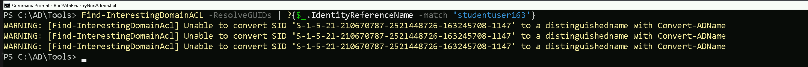
As a member of the StudentsUsers group we do have:
GenericAll on Support168User , Support169User and Support170User:
- Full control, allowing password resets, attribute modifications, group membership changes, or deletion of these accounts. This can be used for privilege escalation if these accounts have elevated privileges.
Enumerating Domain, Forest & Trusts
Domain, forest, and trust enumeration is a crucial phase in Active Directory (AD) enumeration during penetration testing or Red Team engagements. This process provides insights into the structure, relationships, and potential attack paths within and across AD environments. Understanding how domains, forests, and trusts interact is essential for identifying misconfiguration and opportunities for lateral movement, privilege escalation, and even cross-domain compromises.
1. Domains
- A domain is the fundamental administrative boundary in Active Directory.
- Each domain contains its own user accounts, groups, computers, and policies.
- Domains operate under a single security boundary, meaning permissions and privileges are typically confined within that domain unless explicitly extended via trusts.
2. Forests
- A forest is a collection of one or more domains that share:
- The first domain created in a forest is the forest root domain, which holds administrative control over the entire forest.
3. Trusts
- A trust is a relationship between domains or forests that allows resources to be shared securely.
- Types of Trusts:
- Trust Directions:
Why Enumerate Domains, Forests, and Trusts?
- Mapping the Environment:
- Identifying Attack Paths:
- Expanding the Scope of Access:
- Exploiting Trusts:
Key Aspects to Enumerate
1. Domain Enumeration
- Domain Controllers (DCs):
- Domain Policies:
- Domain Admins:
- Service Principal Names (SPNs):
2. Forest Enumeration
- Global Catalog Servers:
- Schema:
- Cross-Domain Groups:
3. Trust Enumeration
- Types and Directions of Trusts:
- Trust Attributes:
- SID Filtering:
- Kerberos Delegation:
Use Case in Red Team Engagement
Scenario: Exploiting a Misconfigured Trust
- Initial Access:
- Trust Enumeration:
- Privilege Escalation:
- Result:
Common Misconfigurations to Look For
- Overly Permissive Trusts:
- Disabled SID Filtering:
- Weak Password Policies:
- Unrestricted Kerberos Delegation:
Domain, forest, and trust enumeration is a critical step in understanding the structure and relationships within an AD environment. By identifying trust relationships and their weaknesses, attackers can map out attack paths for lateral movement and privilege escalation. Organizations must focus on securing trust configurations, enabling proper filtering, and monitoring cross-domain activity to mitigate these risks. For Red Teams, trust enumeration provides powerful insights into potential avenues for cross-domain compromises, making it an indispensable part of AD enumeration.
Enumerating Domains with ADModule
Let’s make sure that we have executed InvisiShell to bypass the 4 Powershell defense mechanisms. RunWithRegistryNonAdmin.bat Now let’s start by issuing the Get-ADForest to get a full overview of all the domains.
This command quickly maps the forest's structure, identifies key servers (e.g., Domain Controllers, Global Catalogs), and highlights potential targets for attacks or lateral movement.
Get-ADForest
Now let’s start by issuing the Get-ADForest to get a full overview of all the domains.
This command quickly maps the forest's structure, identifies key servers (e.g., Domain Controllers, Global Catalogs), and highlights potential targets for attacks or lateral movement.
Get-ADForest
 This command quickly maps the forest's structure, identifies key servers (e.g., Domain Controllers, Global Catalogs), and highlights potential targets for attacks or lateral movement.
The Get-ADForest command enumerates the structure and key components of the Active Directory forest. It provides a summary of:
This command quickly maps the forest's structure, identifies key servers (e.g., Domain Controllers, Global Catalogs), and highlights potential targets for attacks or lateral movement.
The Get-ADForest command enumerates the structure and key components of the Active Directory forest. It provides a summary of:
- Domains: Lists all domains in the forest (e.g., techcorp.local and us.techcorp.local).
- FSMO Roles:
- Global Catalogs: Servers hosting cross-domain data for faster queries.
- Forest Functional Level: Features available in the forest (Windows2016Forest).
- Application Partitions: DNS replication zones (DomainDnsZones and ForestDnsZones).
- Root Domain: Identifies the forest's root domain (techcorp.local).
- Sites: Lists AD sites (Default-First-Site-Name).
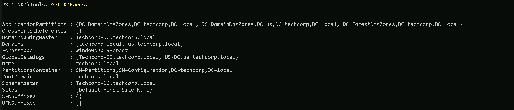
Above we can see all the domains belonging to this forest.
Enumerating Domains with PowerView
PowerView enumeration will bring the output a bit different from ADModule even tho we are basically carrying the same information. Get-ForestDomain -Verbose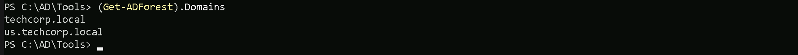
The output from PowerView will tell us in simple words what is the Forest name we are currently, which is this case the current forest is techcorp.local. We can also see that we only have one Childen Domain (us.techcorp.local). Keep in mind that the command below will only show us domains within forest, no external domains will be shown here.
We can simply query all domains from this forest by filtering by name property. Get-ForestDomain -Verbose | Select -ExpandProperty Name
Enumerating Trusts with ADModule
We can also map or enumerate all the Trusts we do have from the current domain we are part of (us.techcorp.local). Get-ADTrust -Filter The above query will show us that we do have 2 Trusts which both of them are BiDirectional Trusts. To be able to determine which type of Trusts we do have, we should pay attention on the following properties on the previous query.
The above query will show us that we do have 2 Trusts which both of them are BiDirectional Trusts. To be able to determine which type of Trusts we do have, we should pay attention on the following properties on the previous query.
- (techcorp.local) Internal Trust
- (eu.local) External Trust
TrustType:
- DOWNLEVEL (0x00000001) — A trusted Windows domain that IS NOT running Active Directory. This is output as WINDOWS_NON_ACTIVE_DIRECTORY in PowerView for those not as familiar with the terminology.
- UPLEVEL (0x00000002) — A trusted Windows domain that is running Active Directory.This is output as WINDOWS_ACTIVE_DIRECTORY in PowerView for those not as familiar with the terminology.
- MIT (0x00000003) — a trusted domain that is running a non-Windows (
- NON_TRANSITIVE (0x00000001) — The trust cannot be used transitively. That is, if DomainA trusts DomainB and DomainB trusts DomainC, then DomainA does not automatically trust DomainC. Also, if a trust is non-transitive, thenyou will not be able to query any Active Directory information from trusts up the chain from the non-transitive point. External trusts are implicitly non-transitive.
- UPLEVEL_ONLY (0x00000002) — only Windows 2000 operating system and newer clients can use the trust.
- QUARANTINED_DOMAIN (0x00000004) — SID filtering is enabled (more on this later). Output as FILTER_SIDS with PowerView for simplicity.
- FOREST_TRANSITIVE (0x00000008) — cross-forest trust between the root of two domain forests running at least domain functional level 2003 or above.
- CROSS_ORGANIZATION (0x00000010) — the trust is to a domain or forest that is not part of the organization, which adds the OTHER_ORGANIZATION SID. This is a bit of a weird one.
- WITHIN_FOREST (0x00000020) — the trusted domain is within the same forest, meaning a parent->child or cross-link relationship
- TREAT_AS_EXTERNAL (0x00000040) — the trust is to be treated as external for trust boundary purposes. According to the documentation, “If this bit is set, then a cross-forest trust to a domain is to be treated as an external trust for the purposes of SID Filtering. Cross-forest trusts are more stringently filtered than external trusts. This attribute relaxes those cross-forest trusts to be equivalent to external trusts.” This sounds enticing, and I’m not 100% sure on the security implications of this statement ¯\_(ツ)_/¯ but I will update this post if anything new surfaces.
- USES_RC4_ENCRYPTION (0x00000080) — if the TrustType is MIT, specifies that the trust that supports RC4 keys.
- USES_AES_KEYS (0x00000100) — not listed in the linked Microsoft documentation, but according to some documentation I’ve been able to find online, it specifies that AES keys are used to encrypt KRB TGTs.
- CROSS_ORGANIZATION_NO_TGT_DELEGATION (0x00000200) — “If this bit is set, tickets granted under this trust MUST NOT be trusted for delegation.” This is described more in [MS-KILE] 3.3.5.7.5 (Cross-Domain Trust and Referrals.)
- PIM_TRUST (0x00000400) — “If this bit and the TATE (treat as external) bit are set, then a cross-forest trust to a domain is to be treated as Privileged Identity Management trust for the purposes of SID Filtering.” According to [MS-PAC] 4.1.2.2 (SID Filtering and Claims Transformation), “A domain can be externally managed by a domain that is outside the forest.
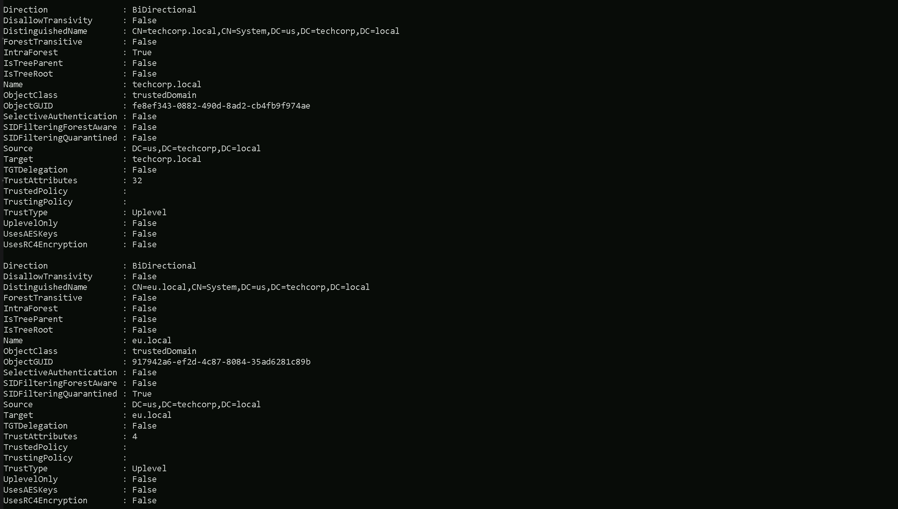
- (us.techcorp.local → eu.local) External Trust
- (euvendor.local → eu.local) External Trust
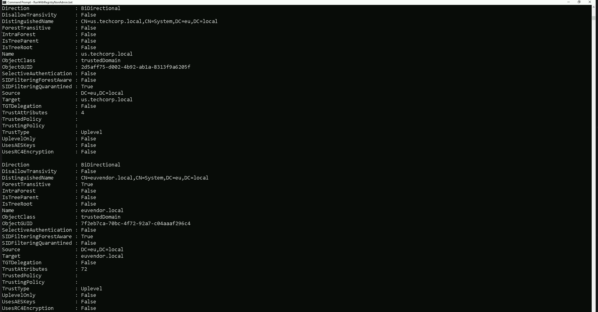
We can see above that our parent domain techcorp.local has 2 external Trust relationship.- (usvendor.local) External Trust
- (bastion.local) External Trust
Enumerating Trusts with PowerView
Let’s now Enumerate Trusts using PowerView module. Get-DomainTrust -Verbose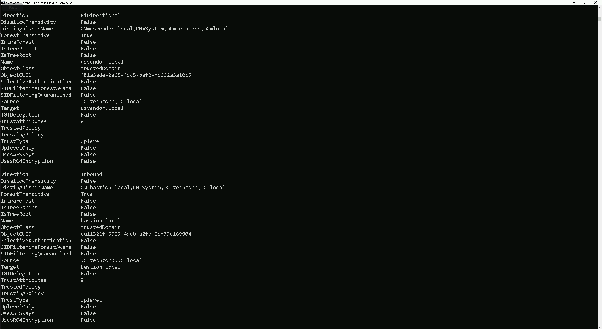
The output of our Trusts enumeration using PowerView reveal basically what we have seen already using ADModule Trust enumeration. The query we did will only bring all the Trusts we do have inside our current domain eu.techcorp.local.Trusts
UPLEVEL (0x00000002) - A trusted Windows domain that is running Active Directory.This is output as WINDOWS_ACTIVE_DIRECTORY in PowerView for those not as familiar with the terminology.Attributions
WITHIN_FOREST (0x00000020) — the trusted domain is within the same forest, meaning a parent->child or cross-link relationship QUARANTINED_DOMAIN (0x00000004) — SID filtering is enabled (more on this later). Output as FILTER_SIDS with PowerView for simplicity.
TrustType:
- DOWNLEVEL (0x00000001) — A trusted Windows domain that IS NOT running Active Directory. This is output as WINDOWS_NON_ACTIVE_DIRECTORY in PowerView for those not as familiar with the terminology.
- UPLEVEL (0x00000002) — A trusted Windows domain that is running Active Directory.This is output as WINDOWS_ACTIVE_DIRECTORY in PowerView for those not as familiar with the terminology.
- MIT (0x00000003) — a trusted domain that is running a non-Windows (
- NON_TRANSITIVE (0x00000001) — The trust cannot be used transitively. That is, if DomainA trusts DomainB and DomainB trusts DomainC, then DomainA does not automatically trust DomainC. Also, if a trust is non-transitive, thenyou will not be able to query any Active Directory information from trusts up the chain from the non-transitive point. External trusts are implicitly non-transitive.
- UPLEVEL_ONLY (0x00000002) — only Windows 2000 operating system and newer clients can use the trust.
- QUARANTINED_DOMAIN (0x00000004) — SID filtering is enabled (more on this later). Output as FILTER_SIDS with PowerView for simplicity.
- FOREST_TRANSITIVE (0x00000008) — cross-forest trust between the root of two domain forests running at least domain functional level 2003 or above.
- CROSS_ORGANIZATION (0x00000010) — the trust is to a domain or forest that is not part of the organization, which adds the OTHER_ORGANIZATION SID. This is a bit of a weird one.
- WITHIN_FOREST (0x00000020) — the trusted domain is within the same forest, meaning a parent->child or cross-link relationship
- TREAT_AS_EXTERNAL (0x00000040) — the trust is to be treated as external for trust boundary purposes. According to the documentation, “If this bit is set, then a cross-forest trust to a domain is to be treated as an external trust for the purposes of SID Filtering. Cross-forest trusts are more stringently filtered than external trusts. This attribute relaxes those cross-forest trusts to be equivalent to external trusts.” This sounds enticing, and I’m not 100% sure on the security implications of this statement ¯\_(ツ)_/¯ but I will update this post if anything new surfaces.
- USES_RC4_ENCRYPTION (0x00000080) — if the TrustType is MIT, specifies that the trust that supports RC4 keys.
- USES_AES_KEYS (0x00000100) — not listed in the linked Microsoft documentation, but according to some documentation I’ve been able to find online, it specifies that AES keys are used to encrypt KRB TGTs.
- CROSS_ORGANIZATION_NO_TGT_DELEGATION (0x00000200) — “If this bit is set, tickets granted under this trust MUST NOT be trusted for delegation.” This is described more in [MS-KILE] 3.3.5.7.5 (Cross-Domain Trust and Referrals.)
- PIM_TRUST (0x00000400) — “If this bit and the TATE (treat as external) bit are set, then a cross-forest trust to a domain is to be treated as Privileged Identity Management trust for the purposes of SID Filtering.” According to [MS-PAC] 4.1.2.2 (SID Filtering and Claims Transformation), “A domain can be externally managed by a domain that is outside the forest.

(us.techcorp.local → eu.local) Domain Trust
- Direction: Bidirectional → Mutual trust, allowing access between both domains.
- SourceName: us.techcorp.local → The trust originates from us.techcorp.local.
- TargetName: eu.local → The trust applies to the external domain eu.local.
- TrustType: WINDOWS_ACTIVE_DIRECTORY → The trusted domain is running Active Directory.
- TrustAttributes: FILTER_SIDS → SID filtering is enabled to protect against SID injection attacks.
- WhenCreated: 7/13/2019 11:17:35 AM → The trust was established on this date.
- WhenChanged: 1/17/2025 5:06:16 AM → The trust was last modified on this date.
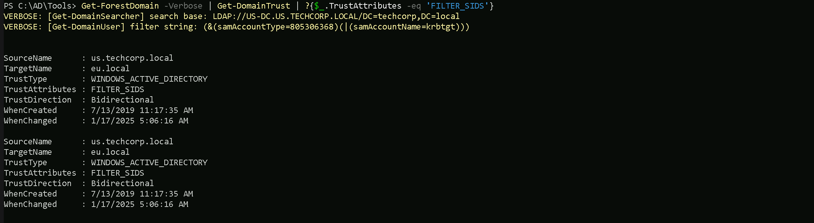
(euvendor.local → eu.local) Forest Trust
- Direction: Bidirectional → Mutual access between both forests.
- TopLevelNames: {euvendor.local} → Indicates the trusted top-level domain of the external forest.
- ExcludedTopLevelNames: {} → No domains are excluded from this trust.
- SourceName: eu.local → The trust originates from the eu.local forest.
- TargetName: euvendor.local → The trust applies to the external forest euvendor.local.
- TrustType: Forest → A forest-level trust that applies across all domains in both forests.
Trust between eu.local and euvendor.local is a forest-level trust and is bidirectional, enabling resource sharing across all domains within both forests. No exclusions or limitations are applied to the trusted domains.
We have now completed all the steps needed for a good enumeration inside our target environment. Let’s now move to the next step to explore some privilege escalation techniques.